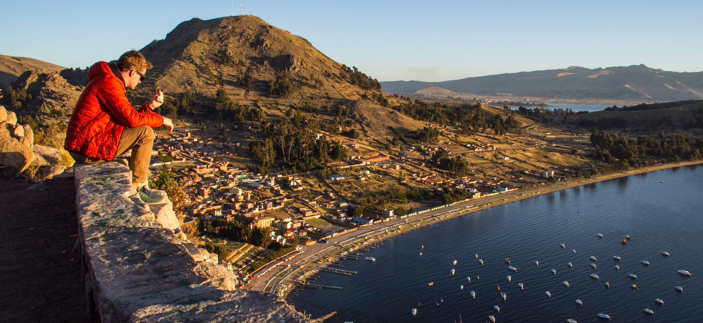
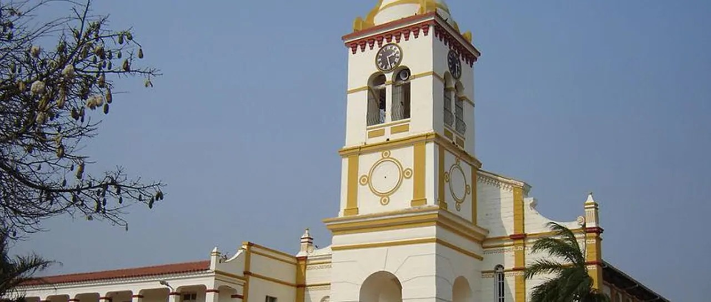
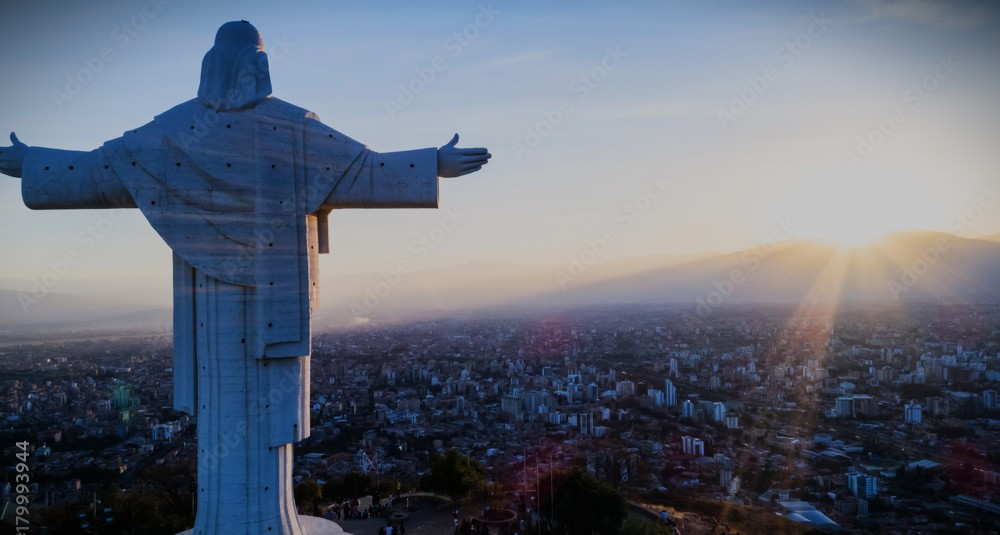
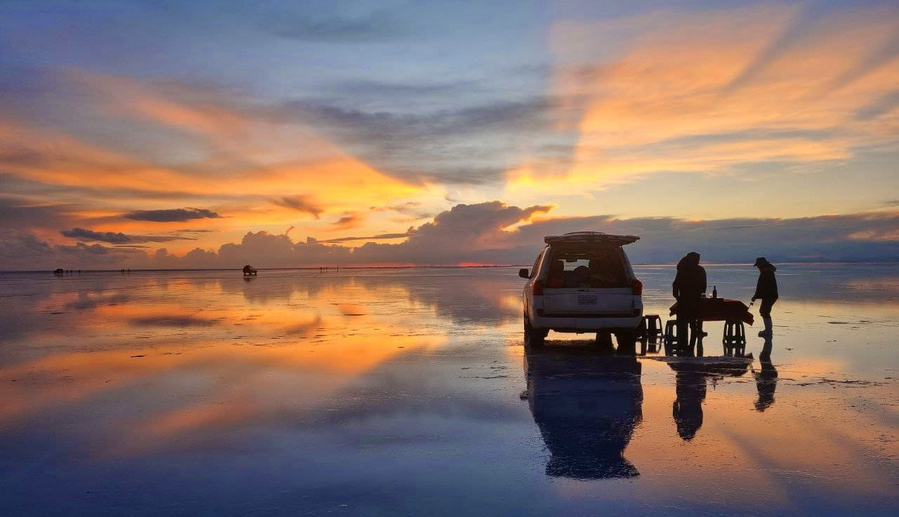

A orillas del Lago Titicaca, Copacabana es uno de los centros de peregrinación religiosa más importantes de Bolivia, especialmente durante Semana Santa. Miles de peregrinos visitan la Basílica de la Virgen de Copacabana para participar en las misas y procesiones.

El Santuario de Cotoca, cerca de Santa Cruz, Bolivia, aunque su peregrinación principal es en diciembre, recibe más visitantes y ofrece misas especiales durante la Semana Santa.

El Cristo de la Concordia en Cochabamba ofrece vistas panorámicas de la ciudad. Es un popular atractivo turístico. Se puede acceder a la cima en teleférico o caminando.

Si bien no es un destino religioso, la inmensidad y belleza del Salar ofrecen un espacio para la reflexión y la conexión con la naturaleza. Es un destino popular para turistas nacionales e internacionales.
